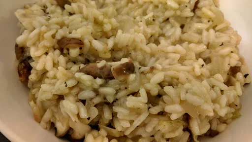

Shiitake mushroom risotto
30 mins
Serves 4
Vegetarian

Ingredients
-
100
g butter
-
1
large onion, finely chopped
-
2
small cloves garlic, finely chopped
-
1½
mug risotto rice
-
4
mugs water
-
2
vegetable stock cube
-
2
x 120 g pack shiitake mushrooms, sliced
- salt and pepper
-
1
tbsp fresh basil, chopped
- Paremesan cheese, to serve
Instructions
- Melt the
butter100 g
in a pan, add the onion1 large
and garlic2 small cloves
and fry for 2-3 minutes until the onions are soft.
- Add the
rice1½ mug
and cook for 1 minute until the rice1½ mug
has absorbed the butter100 g
. Add the water4 mugs
and stock2
cubes. Bring to the boil, then turn down to simmer for 10 minutes. Stir every now and then.
- Add the mushrooms and simmer for a further 5-6 minutes. Stir frequently. The
rice1½ mug
should be cooked and most of the liquid absorbed. If not, then add a little more water4 mugs
and cook for 2-3 more minutes.
- Season well with salt and pepper and stir in the
basil1 tbsp
at the last minute.
- Serve in a bowl with some freshly shaved Parmesan over the top
Nosh for graduates
Short Link
Long Link